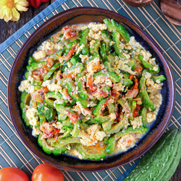

Ginisang Ampalaya

Quick and healthy dish!
A classic Filipino comfort food that balances texture and taste. The highlight of the dish is the addition of beaten eggs, which scramble gently into the mix, creating a soft, creamy contrast to the crisp-tender vegetable.
Ingredients
- 1 Ampalaya
- Water
- 2 Eggs
- 1 Diced Onion
- 5 Cloves of Garlic
- Cooking oil
- Salt and Pepper
- Seasoning (Optional)
Steps
- Cut the ampalaya into thin slices
- Submerge the ampalaya into a bowl of water with salt to reduce the bitterness. Set it aside for at least 10 minutes
- Beat the 2 eggs and season it with salt and pepper
- Heat up the oil on a cooking pan
- Saute the garlic and onions
- Drain the ampalaya from the salt water and add it to the pan
- Stir it for a couple of seconds and add the egg
- Stir until everything is fully mixed
- Add the seasoning for a flavorful taste
- Serve it hot and enjoy!
Home